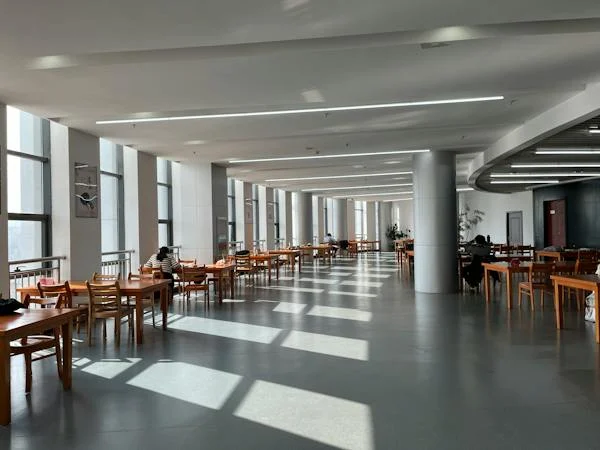

17
Maestrías y Doctorados

CANCÚN, la ciudad donde crecerás personal y profesionalmente:
La excelente conectividad aérea que tiene Cancún con 81 ciudades del mundo contribuye a incrementar
anualmente la llegada de turistas de todo el mundo a través del
Ven y estudia en la